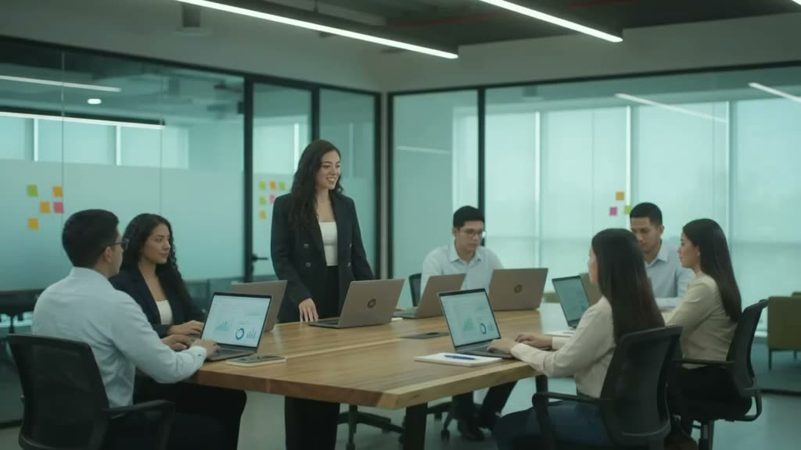

Programa de superinteligencia para emprendedores
Prompt to Prosperity
Un programa de entrenamiento práctico en el uso de superinteligencia para emprendedores hondureños.
Cifras de la Generación 1 Cómo ayudar Negocios participantes
El programa
Acerca del Programa
Durante 10 meses, los participantes seleccionados tendrán acceso a formación práctica en superinteligencia, herramientas digitales, mentorías, expertos nacionales e internacionales y una comunidad de emprendedores con ganas de crecer, innovar y generar impacto.
Dirigido a quienes quieren aplicar lo aprendido directamente en su negocio y convertir la SI en una herramienta real para crecer, optimizar procesos y abrir nuevas oportunidades a través de:
- Talleres prácticos y teóricos
- Mentorías individuales
- Ejercicios en tu propio negocio
- Implementación de SI
- Networking entre emprendedores

Sesiones
Cada sesión temática dura 2 horas.
Talleres de SI
Cada taller práctico de SI dura 3 horas.
Las sesiones dedican más tiempo a la práctica que a la teoría, y cada taller cierra con un espacio para preguntas y respuestas.
10 Durante meses
tendrás acceso a
- Suscripciones gratuitas a Claude y Canva pro
- Talleres con expertos nacionales e internacionales.
- Mentorías 1 a 1 con profesionales y expertos.
- Formación práctica en superinteligencia aplicada a negocios.
- Networking con otros emprendedores, profesionales y aliados.
- Recursos y materiales complementarios.
- Programa con respaldo de la Embajada de los Estados Unidos en Honduras.
- Visibilidad y exposición en redes a los negocios participantes.
- Herramientas para productividad, operaciones, marketing, marca y datos.
- Espacio para presentar avances y resultados.
- Certificado oficial respaldado por PtP y la Embajada de EE. UU. en Honduras.El certificado está sujeto al cumplimiento de los requisitos del programa.
Currículum
¿Qué aprenderán los emprendedores?
Pasa el cursor o toca cada módulo para ver su descripción.
Resultados
Impacto esperado
- Mayor productividad
- Mejor presencia digital
- Mejor atención al cliente
- Procesos más eficientes y óptimos
- Decisiones basadas en datos
- Materiales bilingües para ampliar mercados
Nuestras estadísticas · Generación 1
De 212 postulaciones, 40 seleccionados
Datos recolectados de los aplicantes e información solicitada en el Formulario de Aplicación a los emprendedores hondureños.
Generación 1 · Cifras de la convocatoria
Género de las postulaciones
132 mujeres62.3 % de las postulaciones
78 hombres36.8 % de las postulaciones
Por tipo de emprendimiento
40 participantes seleccionados
27Producto · 67.5 %
13Servicio · 32.5 %
Aspectos que consideramos en el proceso de selección:
- La calidad y completitud de la aplicación
- Motivación para formar parte del programa
- El nivel de compromiso que demuestren
- El potencial de crecimiento del emprendimiento
- Interés en implementar SI en su negocio
- La claridad sobre cómo aplicará lo aprendido
- Interés en generar un impacto positivo en su comunidad
212 postulaciones completas
40 emprendedores seleccionados
62.3 % de las postulaciones son de mujeres
13 negocios de alimentos
27 emprendimientos de producto
10 meses de formación
17 sesiones virtuales
Por qué lo hacemos
La brecha digital del emprendimiento
Muchos emprendedores ya conocen la superinteligencia, pero pocos logran convertirla en una ventaja para su negocio. Estas son las barreras que queremos ayudar a superar:
Tienen múltiples roles al mismo tiempo.
Venden, atienden, producen y llevan las cuentas. Les queda poco tiempo para aprender herramientas nuevas.
Carecen de apoyo técnico especializado.
Pocas veces cuentan con alguien que les enseñe a aplicar la tecnología a su caso concreto.
Utilizan SI de manera limitada.
La usan para tareas sueltas, como redactar un mensaje, sin aprovechar todo lo que puede hacer por su negocio.
No transforman la SI en procesos de negocio.
Sin un método, lo que aprenden no se convierte en más ventas, ahorro de tiempo ni mejores decisiones.
Nuestra respuesta
Prompt to Prosperity
Empoderar a emprendedores hondureños con habilidades prácticas en superinteligencia para fortalecer su productividad, mejorar su presencia digital, optimizar la gestión de sus negocios y generar mayores oportunidades de crecimiento económico.
- Talleres especializados
- Mentorías
- Laboratorios de SI
Alianza institucional
Respaldado por un ecosistema de confianza.
En alianza con
Financiado por el Departamento de Estado de los Estados Unidos a través del Alumni Engagement Innovation Fund (AEIF).
- ★ Embajada de los Estados Unidos en Honduras · Respaldo del programa
- Departamento de Estado de los EE. UU. · Alumni Engagement Innovation Fund (AEIF)
- Asociación Despierta Honduras (ADH) · Aliado
- Banco Atlántida · Aliado
- #ExchangeAlumni · Fulbright – Banco Atlántida
Sé parte del movimiento
Cómo ayudar
El programa crece con cada persona y organización que se suma. Elige la forma de apoyo que mejor va contigo.
Próxima convocatoria
Entérate primero
Síguenos en redes para saber cuándo se abre la próxima convocatoria y compártela con emprendedores que conozcas.
Seguir a @prompttoprosperity →
Comunidad · Generación 1
Apoya a los negocios participantes
Conoce a los emprendedores del programa y elige sus productos y servicios. Comprarles también es apoyar.
Ver negocios →
Otras formas de sumarte
¿Representas una organización? Escríbenos a prompttoprosperity@gmail.com →